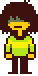
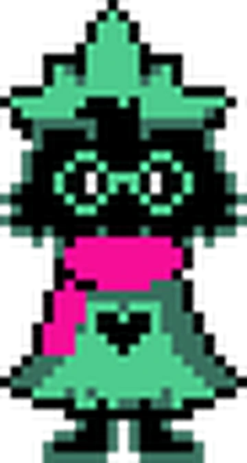
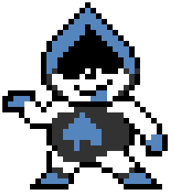
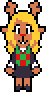
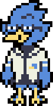

Personajes
En Deltarune encontramos una amplia variedad de personajes: desde los protagonistas que acompañan al jugador en la aventura, hasta aliados y enemigos memorables. Aquí te presentamos a los más importantes.
Protagonistas
Kris
Kris es el personaje controlado por el jugador durante la mayor parte de Deltarune. Su comportamiento reservado contrasta con ciertos momentos en los que parece actuar de manera independiente, lo que sugiere que es consciente de la presencia del jugador. Su rol central lo posiciona como el vínculo directo entre el mundo del juego y quien lo controla.

Susie
Susie es una compañera de clase inicialmente intimidante y agresiva. A medida que avanza la historia, desarrolla una relación más cercana con Kris y Ralsei, mostrando un lado más empático y humano. Su evolución constituye uno de los ejes principales en algunos capitulos.

Ralsei
Ralsei es el príncipe del Dark World y actúa como guía del grupo. Se caracteriza por su amabilidad, diplomacia y actitud pacífica. Aunque su naturaleza es tranquilizadora, su origen y verdadera función dentro del grupo mantienen un grado de misterio.

Aliados
Lancer
Lancer es el hijo del King y aparece inicialmente como antagonista menor. No obstante, su actitud juguetona y su carisma lo llevan rápidamente a convertirse en un aliado. Su presencia aporta humor y ligereza al desarrollo del Capítulo 1.

Noelle
Noelle es una compañera de clase tímida y considerada. En el Capítulo 2 adquiere un papel más relevante, mostrando mayor complejidad emocional y un creciente involucramiento con los eventos del Dark World. Su personalidad amable contrasta con la presión que siente por complacer a los demás.

Berdly
Berdly es un estudiante que se considera a sí mismo un prodigio académico. Competitivo y egocéntrico en apariencia, su participación en el Capítulo 2 revela facetas más humanas y vulnerables. Su relación con sus compañeros refleja su necesidad de validación y reconocimiento.

Antagonistas
King
King es el antagonista principal del Capítulo 1. Busca mantener su control sobre el Dark World y ve a Kris, Susie y Ralsei como una amenaza para su dominio. Su autoridad se ejerce mediante la fuerza y la intimidación.
Queen
Queen es la antagonista del Capítulo 2. Carismática, excéntrica y tecnológicamente orientada, intenta someter a los habitantes del Dark World mediante sistemas automatizados. Su personalidad extravagante la convierte en una figura antagonista reconocible y humorística.
Spamton
Spamton es un antagonista secundario del Capítulo 2. Antiguo vendedor en decadencia, exhibe un comportamiento errático y una retórica característica inspirada en el lenguaje publicitario. Su ambición por recuperar el éxito perdido lo vuelve tan persuasivo como peligroso.
Tenna
Tenna es el antagonista principal del Capítulo 3. Es un presentador de televisión obsesionado con mantener la atención del público y evitar caer en el olvido. Su estilo grandilocuente y su fijación por el espectáculo definen su papel dentro del capítulo.